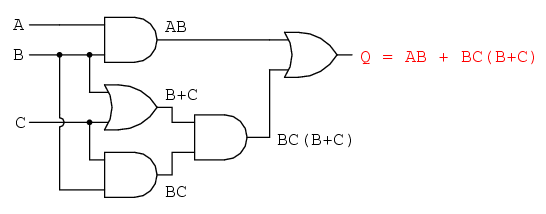
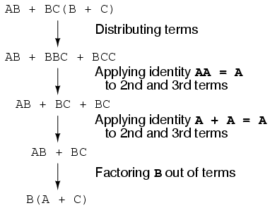
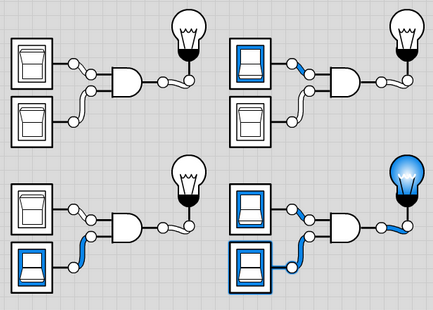
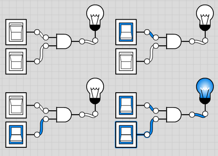
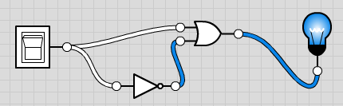

Simplification of Logic Circuits
Boolean algebra in logic circuits · Circuit Simulator
George Boole is the mathematician who helped establish modern symbolic logic and whose algebra of logic, now called Boolean algebra, is basic to the design of digital computer circuits.
Unfortunately, he died before the significance of his work was recognised.
Claude Shannon (died 2001), of MIT fame recognised how Boolean algebra could be applied to on-and-off circuits, where all signals are characterised as either “high” (1) or “low” (0).
He was an American mathematician and electrical engineer who laid the theoretical foundations for digital circuits and information theory, a mathematical communication model.
 - His 1938 thesis put Boole’s theoretical work to use in a way Boole could never have imagined, giving us a powerful mathematical tool for designing and analysing digital circuits.
- His 1938 thesis put Boole’s theoretical work to use in a way Boole could never have imagined, giving us a powerful mathematical tool for designing and analysing digital circuits.
- Boolean algebra finds its most practical use in the simplification of logic circuits.
EXERCISE: Logic Gate Representations
Answer the following in relation to multiple-input logic gates
- For a Three input OR Gate the inputs are 0, 0, 0. What is the output?
- For a Three input NOR Gate the inputs are 0, 1, 1. What is the output?
- For a Three input NAND Gate the inputs are 1, 0, 1. What is the output?
- For a Two input EXOR Gate the inputs are 1, 1. What is the output?
- For a Three input NOR Gate the inputs are 1, 0, 0. What is the output?
Reducing Boolean Expressions
Reducing a Boolean expression to its simplest form means that the fewest gates will be needed to implement
If we translate a logic circuit’s function into Boolean form, and apply certain algebraic rules to the resulting equation to reduce the number of terms and/or arithmetic operations, the simplified equation may be translated back into circuit form for a logic circuit performing the same function with fewer components

Therefore, if there is a Boolean expression to be implemented as a circuit and the equivalent function may be achieved with fewer components, the result will be
- increased reliability
- decreased cost of manufacture
The expression AB + BC(B + C) can be simplified by applying the Laws of Boolean Algebra as follows:

The final expression, B(A + C), is much simpler than the original, yet performs the same function.
EXERCISE Use the laws of Boolean Algebra to simplify:
1. Q = (A+B).(A+C)
2. (A'+B)(A+B)
3. AC'+ABC'
4. AB'D+AB'D'Deriving Boolean Expression from a statement
PROBLEM STATEMENT: If it is dark and a motion sensor detects a person on the front porch, or if the switch is on, then turn on the porch light
POSSIBLE SOLUTION:
Here, there are 3 INPUT variables: INPUTS:
- A sensor that detects dark (d)
- A sensor that detects motion (m)
- Determine if the switch is on (s)
OUTPUT: A switch to turn on/off the porch light (L)
EXERCISE: Create the truth table for above scenario

Use of Logic.ly
Logic circuit simulators can simulate electronic logic gates in an interactive environment on your computer. Such environments are often used to design circuits before implementing them with real electronic components
One such is Logic.ly where users can design circuits quickly and easily with a modern and intuitive user interface with drag-and-drop, copy/paste, zoom & more
- An alternative simulator is boolr.me (I’ve personally only used Logic.ly)
EXERCISES Using Logic.ly
Exercise 1: Click here to open the Logic.ly Simulator demo
- Add two Toggle Switches
- Add an AND gate
- Connect the two switches to the two inputs of the AND gate (click and drag from the connector circles)
- Add a lightbulb, connecting the output from the AND gate to the lightbulb
- Experiment with the AND truth table
 

Exercise 2: Use the simulator to set up the following

- What does this circuit set up demonstrate? What's happening to the inputs?
Exercise 3: What do the following circuits represent?


Exercise 4: Try replicating the function of both OR and XOR gates using only NAND gates
Boolean Algebra De Morgan's Law
- De Morgan's Law states that:
NOT(B OR C) is the same as NOT(B) AND NOT(C)Exercise 5: Show this De Morgan's Law is true by creating the corresponding truth tables (where the outputs should be identical)
Exercise 6: Demonstate this De Morgan's Law rule by setting up the circuit with the aid of logic.ly

Exercise 7: XOR gate output
Use the simulator to create a THREE inputs xor gate… - Is the output behaviour as you expect them to be?
Enjoy experimenting with Logic.ly
Combinational Logic Circuits
The combinational logic circuits can be classified into various types based on the purpose of usage, such as - arithmetic & logical functions, - data transmission and - code converters.
Binary Arithmetic
In computers, arithmetic operations are performed inside the CPU by the ALU.
Arithmetic in binary is much like arithmetic in other numeral systems. Addition is completed using a component within the CPU called an adder
Function of an adder: add two binary numbers, output result
- Inputs: two bits (x,y) to add and one carry-in(Cin)
- Outputs: sum bit (s) and one carry out but (Cout)
Recall the possibilities for adding two binary numbers:
0 + 0 = 0
1 + 0 = 1
1 + 1 = 2 which is 10 in binary which is 0 with a carry of 1
1 + 1 + 1 (carry) = decimal 3 which is 11 in binary. In your calculation, write down one 1 and a carry of 1
EXERCISE: Complete the truth table for the Half Adder

Full Adder
- The full adder is a three input and two output combinational circuit
- A circuit called a full adder takes the carry-in value into account

EXERCISE: Complete the truth table for the Full Adder
Remember: All of the more complex adder architectures are constructed from its basic building blocks such as Half Adder and Full Adder so it's important to understand the workings of these.
Again, experimenting with different circuit combinations will allow you become more familiar with the expected outputs of them...
Solutions to some of the labs
EXERCISE: Use Boolean Algebra to simplify:


Deriving Boolean Expression from a statement
PROBLEM STATEMENT: If it is dark and a motion sensor detects a person on the front porch, or if the switch is on, then turn on the porch light
POSSIBLE SOLUTION:
Logic.ly